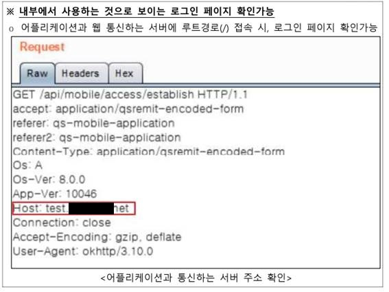

금융보안원 앱 취약성 점검 항목 점검 포인트
I. 중요정보 보호
1. 메모리 내 노출 방지
1.1 중요정보 입력 또는 처리 과정 등에서 메모리 내 평문 (또는 쉽게 평문으로
변환 가능한 문자열) 노출 여부를 점검
(점검방식) 로그인 진행 후, 로그인 정보(ID,비번)를 메모리에서 검색 후, ascii 코드 형태로 된 유사한 정보 추출 후 복호화 시도
(보안포인트) 키보드를 통해 입력되는 로그인 정보는 입력 즉시 암호화되어야 하고, 프로그래상의 로컬변수에도 남아서는 안됨.
취약성 점검자는 위 그림에서와 같이 메모리상에서 유사한 값 모두 스캔 시도해 봄
(점검 포인트) 입력값 암호화 이후, 메모리 덤프 툴을 이용해서, 로그인 이후 메모리에 유사한 문자가 존재하는지 여부 반드시 확인 필요
2. 네크워크 구간 내 노출 방지
2.1 중요정보의 네트워크 구간 내 평문(또는 쉽게 평문으로 변환 가능한 문자열)
노출 여부를 점검
2.2. 취약한 HTTPS 정책 사용 여부를 점검
- 서버 인증서의 유효기간 만료 여부 확인
- 인증서의 서명 알고리즘 및 서명 해시 알고리즘에 SHA1 이하의 해시 알고리즘
사용 여부 확인
- 취약하거나 보안수준이 낮은 프로토콜(SSL2.0/3.0, TLS1.0/1.1) 사용 여부 확인
- 보안 강도가 낮은 암호 알고리즘 허용 여부 확인
- 취약한 방식의 HTTPS 재협상 허용 여부 확인
- 취약점이 존재하는 HTTPS 확장 모듈의 존재 유무 확인
- 전방향 안전성(Forward Secrecy) 지원 여부 확인
※ 취약한 HTTPS 정책 확인 및 조치 시 HTTPS 정책 검증 도구(htts://ssllabs.com 등) 참고
(점검방식) 안전한 HTTPS 프로토콜을 사용하는지 여부와 네트워크 분석기를 통해 암호화되지 않은 데이터 유무 점검
(보안포인트)
0. 민감정보는 평문으로 메모리에 노출되어서는 안되고, 특히 비밀번호는 안전한 방식으로 암호화되어 전송되어야 함
1. SSL 인증서는 국제공인인증기관으로부터 발급받은 것을 사용해야 함
2. SSL 통신 사용하고, 서버별 아래버전을 사용하고 있는지 여부 확인 필요
Apache, Nginx, Lighttpd : OpenSSL 1.0.1 이상
Webtob : WBSSL 1.0.1 이상
Tomcat, WebLogic, Resin : JAVA 1.7 이상
3. 디버그 로그 내 노출 방지
3.1 디버그 로그 내 중요정보의 평문(또는 쉽게 평문으로 변환 가능한 문자열) 노출 여부를 점검
(점검방식) 앱 디버깅 툴을 이용해서, 디버그 로그 확인
(보안포인트) 릴리즈 버전에서는 가급적 디버깅 메시지를 생성하지 말고, 부득이한 경우라도 민감정보(로그인정보, 개인정보, 계좌정보)는 절대로 평문으로 출력하게 해서는 안됨.
4. 파일 내 노출 방지
4.1 이용자 단말의 점검대상 앱 관련 폴더 및 외부 저장소 내 중요정보의 평문
저장 여부를 점검
(점검방식) 앱 디버깅 툴을 이용해서, 앱 관련 폴더 열람 및 파일 점검
(보안포인트) 민감정보(로그인정보, 개인정보, 계좌정보)가 포함된 파일이 절대로 평문으로 출력하게 해서는 안됨
5. 화면 내 노출 방지
5.1 중요정보의 화면 내 평문(원본) 노출 여부 및 화면캡처를 통한 탈취 가능
여부를 점검
5.2 (iOS) 스냅샷 파일 내 중요정보 평문 노출 확인
(점검방식) 스크린 캡쳐 버튼 실행 후 캡쳐 여부 확인
(보안포인트) 안드로이드의 경우 캡쳐 버튼을 방지하는 기능이 추가되어 있어야 하고, iOS의 경우 캡쳐 버튼에 대한 방지가 용이하지 않기 때문에 민감정보에 대해서는 마스킹(**표시)가 되어 있어야 함
6. 입력정보 보호 적용
6.1 이용자의 중요정보 입력 시 입력정보의 평문(또는 쉽게 평문으로 변환 가능한
문자열) 노출 방지를 위한 보호기능 적용 여부를 점검
(점검방식) 민감정보 입력시 입력패턴을 감지할 수 있는지 확인, 입력값에 대한 마스킹 여부 확인
(보안포인트)
1. 비밀번호 입력시, 숫자 또는 문자 입력 키보드의 배열이 매번 변경되도록 구현 필요
2. 민감정보는 화면에 표기되어서는 안되고 입력과 동시에 반드시 마스킹 되어야 함
- 외국인번호 : 13(6-7)자리중 뒷자리 6자리는 반드시 마스킹 처리해야 함
779893-1******
- 비밀번호 : 모든 문자가 마스킹 처리되어야 함
- 계좌번호 : 일부는 반드시 마스킹 처리되어야 함
- 여권번호 : 마스킹 처리 하지 않아도 됨
II. 계좌정보 위변조
1. 계좌정보 변조 방지
1.1 전자금융거래 이용 중 계좌정보 위·변조 시 타인계좌 조회 및 위·변조된 계좌로
거래 가능 여부를 점검
(점검방식) 수신 계좌번호 입력 후에 메모리 디버거를 통해 계좌번호 변경후 송금 시도가 정상적으로 처리되는지 여부 확인 (최종적으로 송금이 성공되는지 여부는 확인하지 않고, 변경된 정보로 서버에 전송이 되는지 여부만 확인)
(보안포인트) 송금정보가 입력될 때와 송금버튼이 눌려질 때의 입력 값에 대한 변조가 없는지 확인 필요. 변조 발생이 감지되면 오류를 출력하고 서버로 전송하지 말아야 함
예. 송금정보가 입력될 때마다 모든 입력값들에 대한 누적 hash값을 저장하고 있다가 입력이 완료되고 ‘송금전송‘ 버튼이 눌려지면 현재 입력값들에 대한 hash 값을 다시 생성하여 기존값과 비교하는 방식 사용
2. 금액정보 변조 방지
2.1. 전자금융거래 이용 중 금액정보 위·변조 시 위·변조된 금액으로 거래 가능
여부를 점검
(점검방식) 금액 정보 입력 후에 메모리 디버거를 통해 금액 변경후 송금 시도가 정상적으로 처리되는지 여부 확인 (최종적으로 송금이 성공되는지 여부는 확인하지 않고, 변경된 정보로 서버에 전송이 되는지 여부만 확인)
(보안포인트) 송금정보가 입력될 때와 송금버튼이 눌려질 때의 입력 값에 대한 변조가 없는지 확인 필요. 변조 발생이 감지되면 오류를 출력하고 서버로 전송하지 말아야 함
예. 송금정보가 입력될 때마다 모든 입력값들에 대한 누적 hash값을 저장하고 있다가 입력이 완료되고 ‘송금전송‘ 버튼이 눌려지면 현재 입력값들에 대한 hash 값을 다시 생성하여 기존값과 비교하는 방식 사용
2.2 전자금융거래 이용 중 이체한도 범위를 벗어나는 금액(최대한도 초과, 음수
등)으로 거래 가능 여부를 점
(점검방식) 송금액으로 마이너스 금액 입력, 초과금액 입력을 통한 송금 시도
(보안포인트) 마이너스 금액 입력 불가 처리, 누적 송금금액의 한도 초과에 여부 확인 기능
3. 거래정보 재사용 방지
3.1 전자금융거래 진행 시 이용된 거래정보를 재전송하여 재사용 가능 여부를 점검
(점검방식) 네트워크 전송 직전의 데이터 셋을 메모리에서 확보한 이후, 정상적인 전송 이후에 동일한 데이터를 수작업으로 다시 전송함.
(보안포인트) 한번 사용된 송금 데이터 셋 정보는 재활용될 수 없도록, 전송 직전의 데이터 셋에는 nonce와 같은 unique id가 반드시 존재하여야 하고 해당 id가 서버에 존재할 경우 중복 전송 오류를 발생시켜야 함 (거래데이터에 timestamp를 추가하는 것도 방법이 될 수 있음)
IV. 클라이언트 보안
1. 앱 위·변조 탐지 적용
1.1 앱 설치파일 또는 설치된 앱의 실행파일 및 중요파일(관련 라이브러리 등)을
변조하여 앱 실행 시 정상 동작 여부를 점검
(점검방식) 앱 설치 파일에서 특정 모듈을 추가하거나 제거 또는 정보파일(예, AndroidManifest.xml)의 일부 내용을 수정한 이후에 앱이 정상적으로 작동하는지 여부 검사
(보안포인트) 안드로이드의 경우 앱 자체에 전자서명을 한 이후, 앱 실행전 전자서명에 대한 무결성 확인 필요 iOS의 경우는 Apple의 배포정책에 따라 자동으로 전자서명 및 검증 과정이 이루어지므로 별도의 조치가 필요없음
2. 해킹OS 탐지 적용
2.1 루팅/탈옥된 단말에서 점검대상 앱 실행 시 정상 실행 가능 여부를 점검
(점검방식) iOS : jailbreak 된 iphone에서 설치 시도
android : root 계정을 획득한 폰에서 설치 시도
(보안포인트) root 계정 또는 jailbreak 된 폰에 대한 감지 코드가 삽입되어, 앱 실행전 반드시 검사한 이후 rooting또는 jailbreak이 감지되면 실행 중지
참고: 보안 점검시 루팅 감지 기능이 포함된 설치모듈과 루팅 감지 기능이 제거된 설치 모듈 2개를 등록해야 하고, 취약성 점검은 루팅 감지 기능이 없는 모듈을 통해 이루어지기 때문에 루팅 감지 기능이 모든 보안을 처리해 줄것으로 기대해서는 안됨
3. 안티디버깅 적용
3.1 디버거를 이용하여 앱 디버깅 후 정상 실행 가능 여부를 점검
(점검방식) iOS : 디버깅 불가
android : 디버거를 이용해 실행 코드 디버깅 및 수정 후 정상 실행 여부 점검
(보안포인트) anti-debugging 검사 기능을 추가하거나, 이 기능이 포함된 툴을 사용하거나, 앱이 조금이라도 수정되거나, 메모리상의 변경을 통해 정상실행이 되지 않도록 프로그램 구성 필요. 참고로 QSRemit은 별도의 anti-debugging 기술을 적용하지는 않았지만, 이 부분은 ‘양호’ 판정을 받았음
4. 코드 난독화 적용 (Android)
4.1 점검대상 앱의 디컴파일이 가능한 경우 복구된 소스코드 내 클래스명, 함수명
등의 노출 또는 중요 로직의 흐름 파악 가능 여부를 점검
(점검방식) iOS : 디컴파일 불가능
android : 디컴파일 시도시 코드가 유추가능한지 여부 검사
(보안포인트) 안드로이드의 경우 progurard 또는 dexguard를 통해 소스코드를 난독화 해야 함
5. 안티바이러스 적용 확인 (Android)
5.1 점검대상 앱 실행 시 안티바이러스 프로그램 실행 여부 및 강제 종료 시
재실행 여부 등을 점검
(점검방식) 점검대상 앱 실행 시 안티바이러스 프로그램 실행 여부 및 강제 종료 시 재실행 여부 등을 점검
(보안포인트) 앱 실행히 상용 또는 자체 개발된 안티바이러스 프로그램이 실행되어야 함. 만일 안티바이러스 프로그램을 강제 종료 시킬 경우, 앱이 구동되지 말아야 함.
자체 개발된 안티바이러스의 경우, 바이러스 검출 및 리스트 업데이트 등에 대한 점검을 별도로 받을 수 있음
V. 서버 보안
1. 리다이렉트 기능을 이용한 피싱 가능성 확인
(점검방식) 리다이렉트 기능이 존자하는 경우 서버로 호출되는 API URL parameter 값을 변경한 이후 임의의 페이지 또는 기능에 대한 호출이 가능한지 여부 확인
(보안포인트) 리다이텍트 기능 사용하지 않음
2. 불필요한 메소드 허용
(점검방식) 툴을 통해 사용되지 않은 메소드가 공개되어 있는지 여부 확인
(예. curl -i -X OPTIONS –L https://mobile.qsremit.net/api)
(보안포인트) 사용되지 않는 메소드는 모두 disable 시켜서 점검 툴에 노출되지 않아야 함
2. 외부 사이트에 의한 운영정보 노출 확인
(점검방식) 검색엔진 등을 통해 핀테크서비스 관련 중요정보의 획득 가능 여부를 점검
(보안포인트) 외부 검색에 노출되지 않도록 API로의 접근 이외에 웹 자체에 대한 접근 불허
3. SQL 인젝션 확인
(점검방식) 웹페이지 접근 및 입력 항목에 대한 SQL 인젝션 시도
(보안포인트) API로의 접근 이외에 웹 자체에 대한 접근 불허
4. 디렉토리 목록화 확인
(점검방식) 특정 디렉토리에 초기 페이지가 존재하지 않거나, 웹서버의 디렉토리 인덱싱 허용
설정 등으로 인한 해당 디렉토리 내 하위 디렉토리 및 파일 목록 노출 여부를 점검
(보안포인트) API로의 접근 이외에 웹 자체에 대한 접근 불허
5. 서버 운영정보 노출 확인
(점검방식) 에러페이지를 유도하여 응답 값으로부터 서버 정보 노출
(보안포인트) 오류 발생시 서버 정보를 제거하고 사용자가 임의로 정한 에러페이지로 이동하도록 조치
5. 크로스사이트 스크립팅(XSS) 확인
(점검방식) 스크립트 전송 또는 업로드를 통해 응답값에 스크립트 포함 및 실행 가능
여부를 점검
(보안포인트) API로의 접근 이외에 웹 자체에 대한 접근 불허
6. 크로스사이트 리퀘스트 변조(CSRF) 확인
(점검방식) 스크립트 구문 등을 업로드하여 타 이용자의 권한으로 실행 가능 여부를 점검
(보안포인트) API로의 접근 이외에 웹 자체에 대한 접근 불허
7. 파일 업로드 취약점 확인
(점검방식) 파일 업로드 기능을 이용하여 서버 사이드 스크립트 파일(JSP, ASP 등) 업로드
및 실행 가능 여부를 점검
(보안포인트) API로의 접근 이외에 웹 자체에 대한 접근 불허
8. 파일 다운로드 취약점 확인
(점검방식) 파일 다운로드 기능을 이용하여 접근이 허용된 디렉토리 외의 경로에 위치한
중요파일(소스코드, 설정파일 등) 다운로드 가능 여부를 점검
(보안포인트) API로의 접근 이외에 웹 자체에 대한 접근 불허
9. 관리자 페이지 노출 확인
(점검방식) API의 response로부터 root URL 확보 및 $root/, $root/admin, $root/manager 등으로 접근시도 (어떠한 경우라도 일반적인 HTML 페이지가 나타나면 안됨)

(보안포인트) API로의 접근 이외에 웹 자체에 대한 접근 불허
10. 불필요 파일 노출 확인
(점검방식) 잘 알려진 경로 대입 등을 통해 불필요 파일(테스트 파일, 백업 파일 등) 노출
여부를 점검
(보안포인트) API로의 접근 이외에 웹 자체에 대한 접근 불허
11. 고정된 state 변수 부여 확인
(점검방식) OAuth 이용자 인증 요청 시 가변적이고 추측이 어려운 state 변수값 부여
여부를 점검
(보안포인트) 반드시 매번 변경되는 state 값 사용
11. state 변수 무결성 검증 확인 확인
(점검방식) 인증 완료 요청시 state 변수값을 변조할 경우 state 변수에 대한 무결성 검증
여부를 점검
(보안포인트) 인증 이후에 state값이 생성된 이후에 클라이언트로부터 변경되지 않았음을 확인
12. 안전한 인증페이지 제공 확인
(점검방식) OAuth 인증이 웹을 통해 이루어질 경우 OAuth 이용자 인증 과정에서 웹뷰를 이용하여 외부 도메인을 호출하는 경우 이용자의 인증페이지 식별*이 제한되어 피싱 위험 등이 존재하므로 안전한 방식**을 통한 인증페이지 출력을 권고
(보안포인트) 인증 웹을 통한 OAuth 방식 지양
VI. 인증
1. 멀티로그인 탐지 적용
(점검방식) 동시에 2대 이상의 단말에서 동일 계정으로 로그인하여 서비스 이용 시도
시 멀티 로그인 탐지 및 대응* 여부를 점검
* 예시 : 경고메시지 출력, 인증 세션 폐기 등
(점검방식) 2 기기에서 동시에 동일 id로 로그인 시도
(보안포인트) 누군가 동시 로그인이 되었다는 메시지 출력 후, 둘 중의 하나 세션 폐기
2. 인증 우회 방지 적용
2-1. 이용자 인증정보 재사용 확인
(점검방식) 이용자 인증 요청(로그인 요청 등) 시 사용된 인증정보를 획득 후 재전송하여
이용자 권한 획득 가능 여부를 점검
(보안포인트) 인증시 사용된 인증정보에 대한 재사용 방지 기능 적용 (nonce 또는 timestamp등을 이용하여 인증정보 재 전송 기능 방지)
2-2. 세션정보 재사용 확인
(점검방식) 이용자 세션정보를 획득하여 별도의 환경에 강제 적용 후 해당 이용자 권한
획득 가능 여부를 점검
(보안포인트) 인증된 상태에서의 세션정보 재사용 방지 기능 적용
2-3. 불충분한 세션 만료 확인
(점검방식) 이용자 인증 후 서비스 이용 없이 일정시간 경과 후 세션 종료 여부를 점검
(보안포인트) 이용없이 일정시간 지속되는 경우 세션 만료 메시지 이후 세션 강제 종료
2-4. 비밀번호 복잡도 검증 수준 확인
(점검방식) 전자금융거래, 로그인 등의 절차 진행 시 요구되는 비밀번호의 복잡도 검증
수준을 점검
(보안포인트) 반복되는 비밀번호, 123456과 같이 오름차순 또는 654321과 같은 내림차순의 비빌번호 사용 불가
2-5. 비밀번호 오류 횟수 제한 확인
(점검방식) 전자금융거래, 로그인 등의 절차 진행 시 이용자가 입력하는 비밀번호의 오류
횟수(5회) 제한 여부를 점검
(보안포인트) 5회 비밀번호를 틀린 경우, 비밀번호 재설정 과정으로 진행하도록 유도 및 로그인 재시도 불허
2-6. 불충분한 이용자 인증 확인
(점검방식) 이용자 인증이 요구되는 화면*에 접근 시 추가 인증 요구 여부 및 URL 직
접 호출, 플로우 통제 우회 등을 통한 인증 우회 가능 여부를 점검
* 비밀번호 변경 화면, 민감정보가 포함된 화면 등
(보안포인트) 인증없이 특정 url로의 접근을 불가능하도록 프로그램 구성
2-7. 부적절한 비밀번호 초기화 확인
(점검방식) 비밀번호 복구 절차 이용 시 타 이용자의 비밀번호 획득, 변경 등의 가능
여부를 점. 타인의 인증
(보안포인트) 비밀번호 복구 절차시, 정확한 인증 및 초기화 보다는 새로운 비밀번호 부여 필요
2-8. 부적절한 인증정보 발급 확인
(점검방식) 서버가 발급하는 인증정보를 추측하여 타 이용자의 권한을 획득할 수 없도록
인증정보의 적절성(가변성 및 복잡성 등)을 점검
(보안포인트) 인증 정보를 단순한 serial number등으로 할 경우, 유추가 가능하므로 복잡성을 높게 만들어야 함
2-9. 불충분한 인가 확인
(점검방식) 파라미터 변조 등을 통한 타 이용자의 민감정보 노출 또는 권한 탈취가 이루어
지지 않도록 접근 권한 검증 여부를 점검
(보안포인트) 파라메터 변경만으로 타 사용자의 민감정보가 노출되지 않도록 인증 세션 유지
2-10. 쿠키정보 변조 확인
(점검방식) 쿠키정보를 이용한 이용자 검증 등의 절차가 존재하는 경우, 쿠키정보 변조를
통한 권한 탈취 등의 취약점 존재 여부를 점검
(보안포인트) 쿠키 정보를 사용한 인증을 할 경우, 쿠키 정보 무결성 및 재사용 방지를 위한 조치를 취해야 함
2-11. 화면 강제 실행 확인
(점검방식) 인증없이 특정 화면(예, 비밀번호 변경 화면)을 강제로 실행할 수 있는 방법에 대한 점검
(보안포인트) 모든 화면에는 정확한 인증과정이 진행된 이후에 생성되도록 이전 인증 정보를 입력으로 처리해야 함. 또한 서비스에 불필요한 테스트 화면과 같은 것은 릴리즈에 포함되지 않아야 함
2-12. 인증파일 변조 확인
(점검방식) 인증파일 변조를 통한 인증절차 우회 가능 여부를 점검
(보안포인트) 인증파일을 사용하지 않거나, 인증파일의 변조를 방지하기 위한 전자서명 방식 채택
2-13. 이체성 거래시 인증 적용 확인
(점검방식) 로그인 이후 이체 이전에 비밀번호 확인 과정이 있는지 확인
(보안포인트) 로그인과는 무관하게 이체이전에는 반드시 비번 입력을 요구하도록 프로그램 구성
2-14. 계좌 소유주 검증 확인 (권고)
(점검방식) 계좌 소유주 인증 시 계정 소유주와 일치 여부를 확인하지 않을 경우 검증
절차 적용을 권고
(보안포인트) 계좌 소유주와 계정 소유주는 반드시 일치하도록 프로그램 구성
2-15. 소셜 로그인 이용 시 계정 보안 강화 확인 (권고)
(점검방식) 소셜 로그인(Google 로그인 등)을 이용하여 이용자를 관리하는 경우 소셜
로그인 과정에서 강화된 인증절차 적용 안내를 권고
(보안포인트) ?